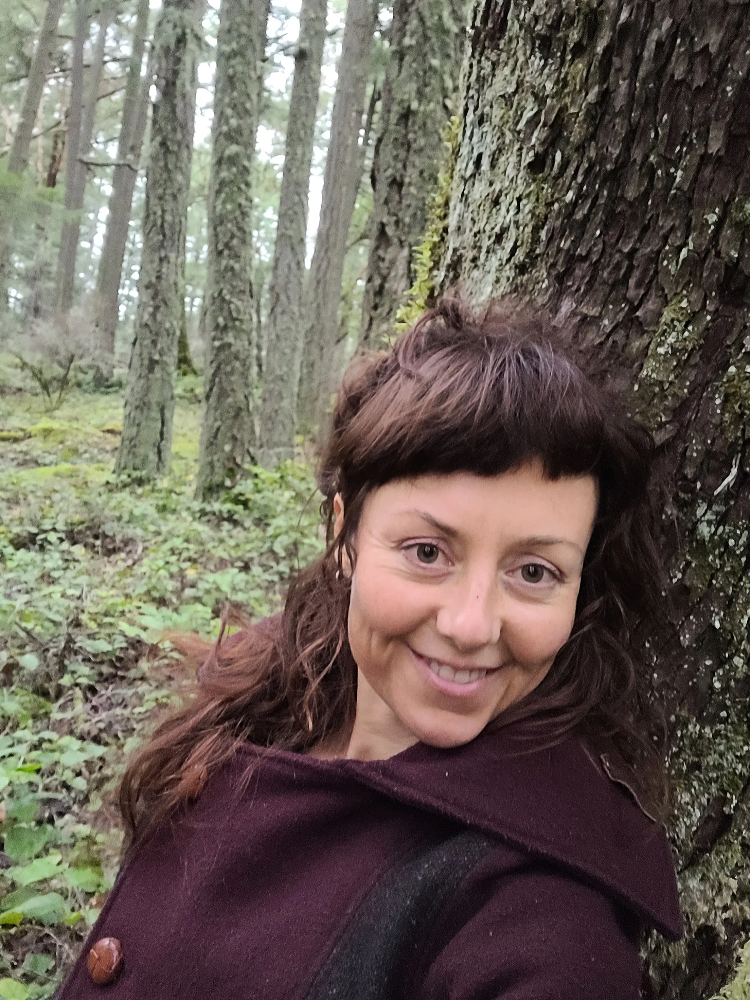

Certified Rolfer, Certified Movement Integration Practitioner
I have always been a body nerd! To me, being physical in my body (hiking, snowboarding, running, team sports, yoga, contemporary dance, theatre, circus arts, capoeira) has been an important part of my personal expression and vitality.
I’ve had a strong personal practice in yoga, meditation and mindful movement for over 20 years.
In my mid thirties, I began experiencing a debilitating and mysteriously intermittent kind of pain. I went to many different therapists who each had their own theories about what was wrong and how to resolve it. I spent 7 years in chronic pain and frustration with my degenerative condition unable to find the support I needed.
Determined to find a solution, I started exploring movement patterning, functional anatomy and learning about connective tissue called, fascia. While studying the ‘Biomechanics of Walking’, a fellow student gave me a book on Rolfing Theory, called ‘A Dynamic Relation to Gravity’ by Rolfer, Edward W. Maupin, Ph.D. So many of the concepts I had been investigating as well as the missing link to understanding my condition started landing! This began my fascination with Rolfing Structural Integration work. Unfortunately for me, my condition had deteriorated to the point where I needed corrective surgery (Total Hip Replacement). Even after surgery, repatterning years of dysfunctional movement takes time and patience. Before and after this procedure, I worked and trained with a number of different Rolfers and Somatic Experience Practitioners in Canada, the US and Brazil to relieve chronic pain, better understand what my body was telling me, and discover more harmonious ways of living in it. This is what I am most passionate about sharing with clients:
Helping people to understand how to shift unhealthy patterns and postures to find the joy of inhabiting their body!
Part of this is understanding habitual ways in which we sabotage ourselves unconsciously. These curiosities led me into further studies in Laban movement patterning, Body Mind Centering, Feldenkrais, the Axis Syllabus and a career in Rolfing® Structural Integration and Rolf Movement.™ I continue to study and learn from a variety of incredible teachers as often as I can.

“It is my passion to empower people to make lasting changes and find stability. With this comes the confidence, hope and joy of inhabiting one’s body.”
“Finding peace with our bodies affects the way that we relate to others and the world around us.”
Book A Session